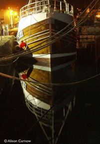
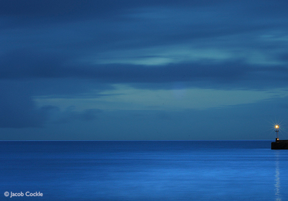

The Harbour & Penzance's Maritime Centre
History of Penzance Harbour
 The picturesque harbour situated on the Penzance sea front has been the long standing centre of town life. In fact, Penzance's first mention in recorded history was in 1322, as place to land fish.
The picturesque harbour situated on the Penzance sea front has been the long standing centre of town life. In fact, Penzance's first mention in recorded history was in 1322, as place to land fish.
Construction of the harbour that we see today began in 1512, with the southern arm being added in 1766, then further extended in 1785. The main pier was again extended in 1812, and it was at this time the harbour began a rapid period of expansion of the next 100 years.
A small dry dock was established in 1812 by John Matthews. Nicholas Holman, a businessman from nearby St. Just opened a branch of his foundry business by the quay side. This drew large numbers of steamships to the harbour for general maintenance. The 1850's saw yet more extensions and improvements to the harbour. The eastern arm, known as the Albert Pier, was built to provide better shelter to the growing number of boats moored in the harbour. The Lighthouse was added in 1855.
Traveling to the Scilly Isles up until 1858 had to be done via private or chartered vessels. It was in this years that the Scilly Isles Steam Navigation Company began sailing from Penzance. After 13 years, the company and route was taken over by the West Cornwall Steam Ship Company in 1871.
The Harbour layout we see to day was firmly cemented in place in the 1880's. A larger dry dock replaced the one built by Mr. Matthews, a floating harbour with large gates to keep the water in was added in 1884. In 1904 the Dry dock was taken over by Holman & Sons Ltd, to still own it to this day.
Today the harbour is used by a large majority of pleasure craft, in addition to the working portion. The Scillonian III provides transport to the Scilly Isles via a 2 hour 40 minute trip, taking both passengers and cargo. This vessel along with the Gry Maritha cargo ship is planned to be replaced with a single vessel for both passengers and freight should proposals go ahead.
Option A
'Option A' is the proposed construction of a passenger / freight depot in Penzance Harbour, along with a new dual purpose vessel capable of carrying both passengers and cargo. It has proved very controversial in the community as a small portion of the beach will need to be reclaimed and the harbour wall built upon in order to make the proposal work. Find out more about 'Option A'.
On March 8th, 2010, proposals were passed by the Cornwall Council Planning Committee.
